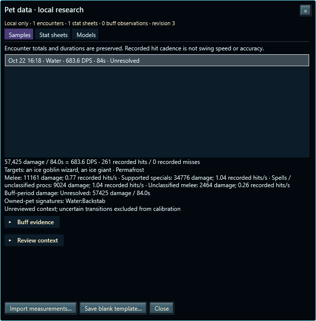
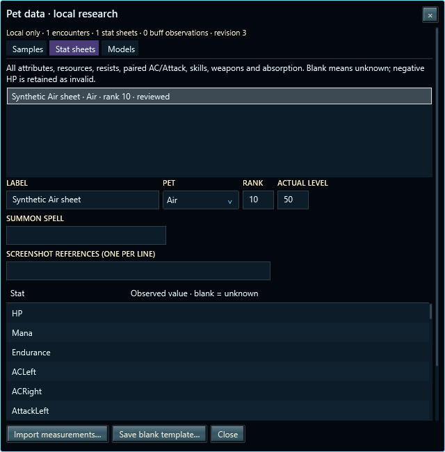
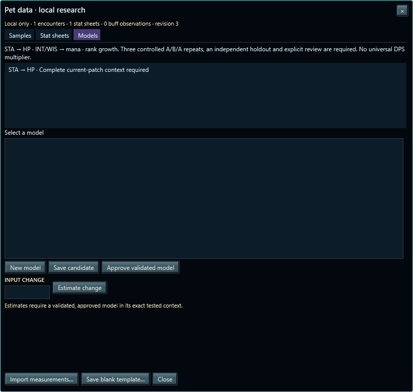

Measured history, reviewed stat sheets and gated models. Private evidence stays per character; the public build leaves research disabled.
Equipment points remain available for goals and optimization. They do not score innate pet abilities or predict DPS.



Synthetic data only. Broad theme/DPI checks remain deferred.